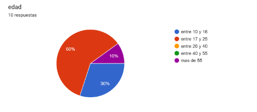
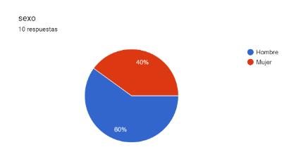
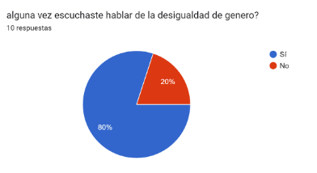
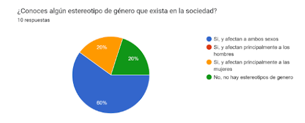

Our survey
Here you can view the results of our gender inequality survey. Provide an overview of the survey findings and any key statistics or insights related to the issue. Our proposal is based on the results of this survey, as we saw this issue was afecting this much the school community we decided to look for a solution.





Conclusion
We believe that addressing gender inequality is of utmost importance, especially in the context of a school environment. The consequences can be very conflictive and traumatic depending on the seriousness of the inequality. This is why we are committed to taking action and promoting gender equality. This is reflected in the survey, as the most affected are adolecents and adults between 17 & 25 and in second place between 10 & 16, ages in which you are at school, so our conclusion is that we have to start by attacking the issue at the school for this terrible situacions to come to an end.